T 투과도(0~1), A 흡광도(단위 없음), ε 몰흡광계수(L·mol⁻¹·cm⁻¹), b 광로 길이(cm), c 몰농도(mol·L⁻¹). 흡광계수 a를 쓰면 A=abc이고 a의 단위는 L·g⁻¹·cm⁻¹이다.
A와 T는 로그 관계라서 T가 1에서 0으로 줄 때 A는 0에서 무한대로 커진다. 농도에 직선 비례하는 것은 T가 아니라 A다.
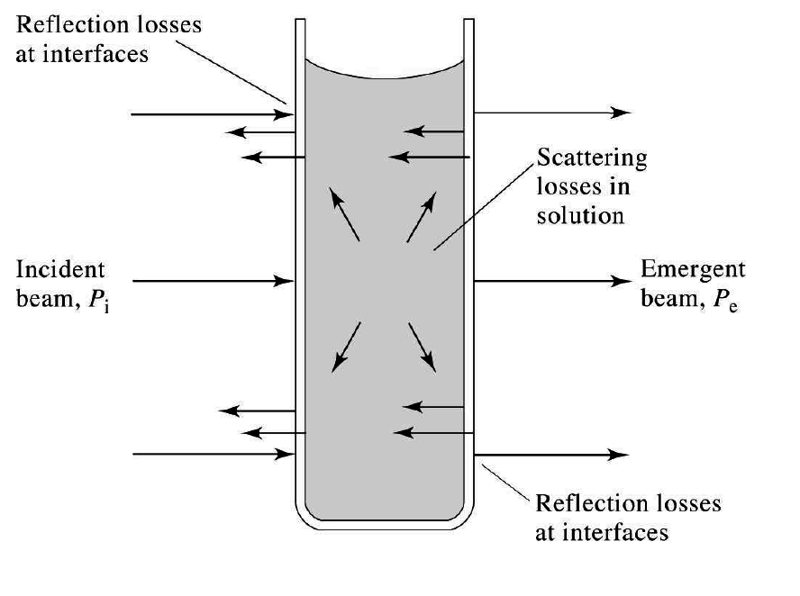
Fig 13-1 셀의 모든 경계에서 반사 손실, 용액 안에서 산란 손실이 생긴다.흡광도는 더할 수 있다. 서로 반응하지 않는 성분이 여러 개면 전체 흡광도는 각 성분 흡광도의 합이다.
Beer 법칙은 단색광일 때만 엄밀히 성립한다. 두 파장 λ′, λ″가 섞여 있으면 측정 흡광도 Am은 다음과 같다.
ε′ = ε″일 때만 Am = ε′bc로 직선이다. 두 값이 다를수록 높은 농도에서 아래로 휜다(음의 편차).
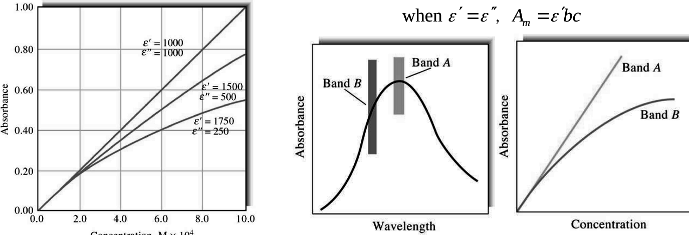
Fig 13-4·13-5 ε′와 ε″ 차이가 클수록 직선에서 더 벗어난다. 흡수 봉우리 꼭대기(Band A, ε가 거의 일정)에서 재면 직선이고, 경사면(Band B)에서 재면 휜다.흡수 최대 파장(λmax)에서 재는 이유가 이것이다. 꼭대기에서는 띠폭 안의 ε 변화가 작아 Beer 법칙에서 덜 벗어나고, 감도도 가장 크다.
Ps 시료에 흡수되지 않는 미광의 세기. 미광은 원하는 파장 밖의 빛이 검출기에 들어오는 것이다.
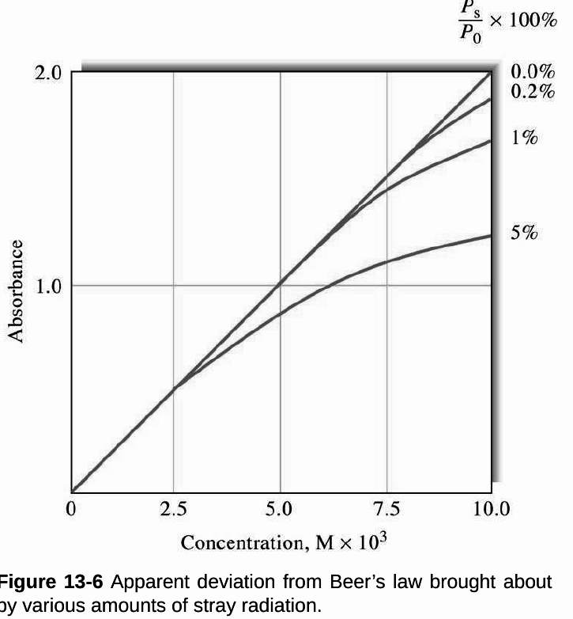
Fig 13-6 미광 비율(Ps/P0)이 0.2%, 1%, 5%로 커질수록 높은 흡광도(높은 농도)에서 더 일찍 아래로 휜다.T 측정의 표준편차 sT가 농도의 상대 표준편차로 어떻게 번지는지 오차 전파로 구한다.
농도 측정의 불확도는 T의 크기에 따라 비선형으로 변한다. T가 너무 크거나(묽음) 너무 작을(진함) 때 모두 오차가 커진다.
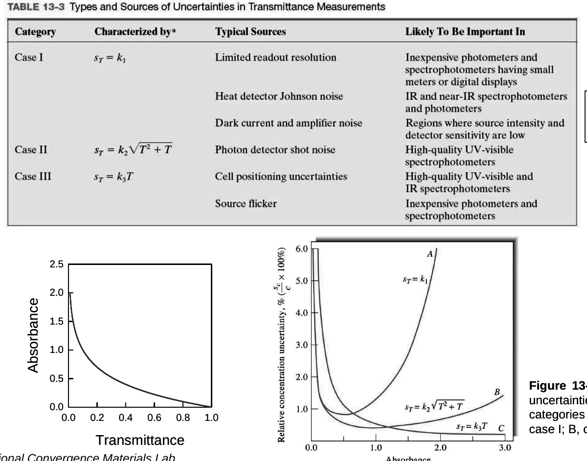
Table 13-3·Fig 13-7 잡음의 세 경우.| 경우 | sT의 형태 | 원인과 기기 |
|---|---|---|
| Case I | sT=k1 (일정) | 읽기 해상도 한계, 열(Johnson) 잡음, 암전류·증폭기 잡음. 저가 광도계, IR 분광광도계. |
| Case II | sT=k2√(T²+T) | 광검출기 산탄(shot) 잡음. 고급 UV-vis 분광광도계. |
| Case III | sT=k3T | 셀 위치 불확실성, 광원 깜박임(flicker). 고급 UV-vis·IR. |
Fig 13-7: Case I은 A가 약 0.4(T≈0.37) 부근에서 오차가 최소다. Case II는 최소가 더 높은 A 쪽으로 넓게 퍼진다. Case III은 A가 클수록 오차가 계속 줄어든다.
구성 요소는 광원, 파장 선택기, 시료 용기, 복사 변환기(검출기), 신호 처리·표시 장치다.
파장 범위 전체에서 세기가 급하게 변하지 않는 연속 광원이 필요하다.
| 광원 | 파장 범위와 특징 |
|---|---|
| D₂·H₂ 램프 | UV 연속 스펙트럼 160~375 nm. 전기에너지로 들뜬 D₂*가 두 원자로 쪼개지며 광자를 낸다. 에너지가 두 원자의 운동에너지와 광자에 나뉘어 연속이 된다. |
| 텅스텐 필라멘트 | 가시·근적외 350~2500 nm의 가장 흔한 광원. 필라멘트 온도 2870 K. |
| LED | 순방향 바이어스 pn 접합. GaAlAs 900, GaP 550, GaN 465, InGaN 450 nm. |
| Xe 아크 램프 | Xe 기체 속 전류로 강한 빛. 200~1000 nm, 최대 약 500 nm. |
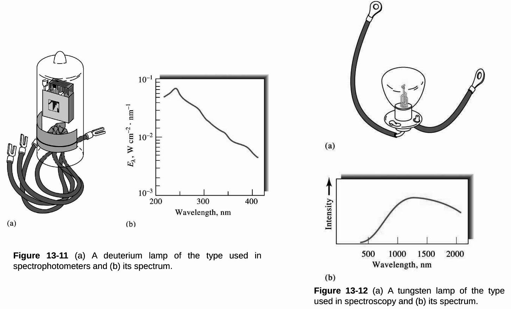
Fig 13-11·13-12 D₂ 램프는 UV(200~400 nm)에서 세고 파장이 길수록 약해진다. 텅스텐 램프는 1000 nm 근처 최대의 넓은 연속 스펙트럼이다.슬라이드는 석영을 "가시·근적외 300~3000 nm에서 투명"이라고 적었다. [보충] 교재 기준으로 석영은 350 nm 아래 UV 측정에 꼭 필요한 셀이다(유리는 UV를 흡수). 시험에서는 "UV 측정에는 석영 셀"로 답하는 것이 안전하다.
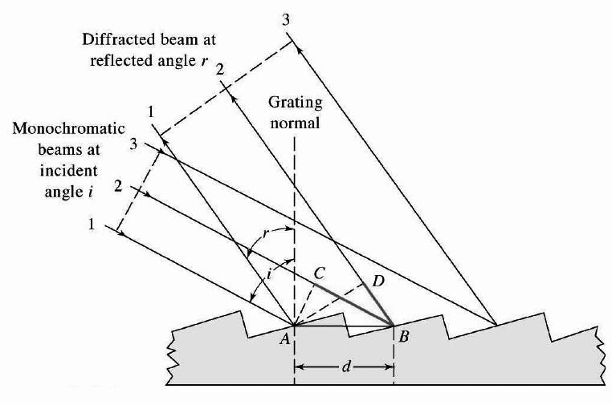
d 홈 간격, i 입사각, θ 회절각, n 회절 차수.
[보충] 교재 식은 nλ = d(sin i + sin r) 형태로도 쓴다. 각의 부호 규약(법선 기준 같은 쪽/반대쪽)만 다르고 원리는 같다. 슬라이드 식을 그대로 쓰면 된다.
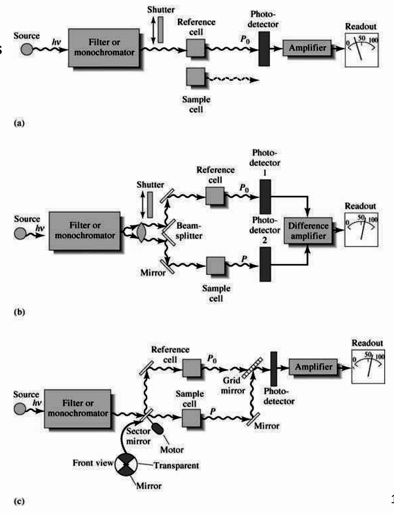
Fig 13-13 (a) 단일 빔 (b) 공간 이중 빔 (c) 시간 이중 빔.| 형식 | 구조와 특징 |
|---|---|
| Single beam | 빔 하나. 기준 셀과 시료 셀을 번갈아 넣어 P0, P를 잰다. 광원이 안정해야 한다. |
| Double beam in space | 빔 분할기로 두 빔을 만들어 기준·시료를 동시에 두 검출기로 잰다(차동 증폭기). |
| Double beam in time | 회전 섹터 거울(chopper)이 빔을 번갈아 기준·시료로 보내 검출기 하나로 잰다. 광원 변동과 검출기 차이를 보정한다. |
| Multichannel | 회절발 분광기와 다이오드 배열 검출기로 모든 파장을 한 번에 잰다. 1초 안에 전체 스펙트럼을 얻는다. |
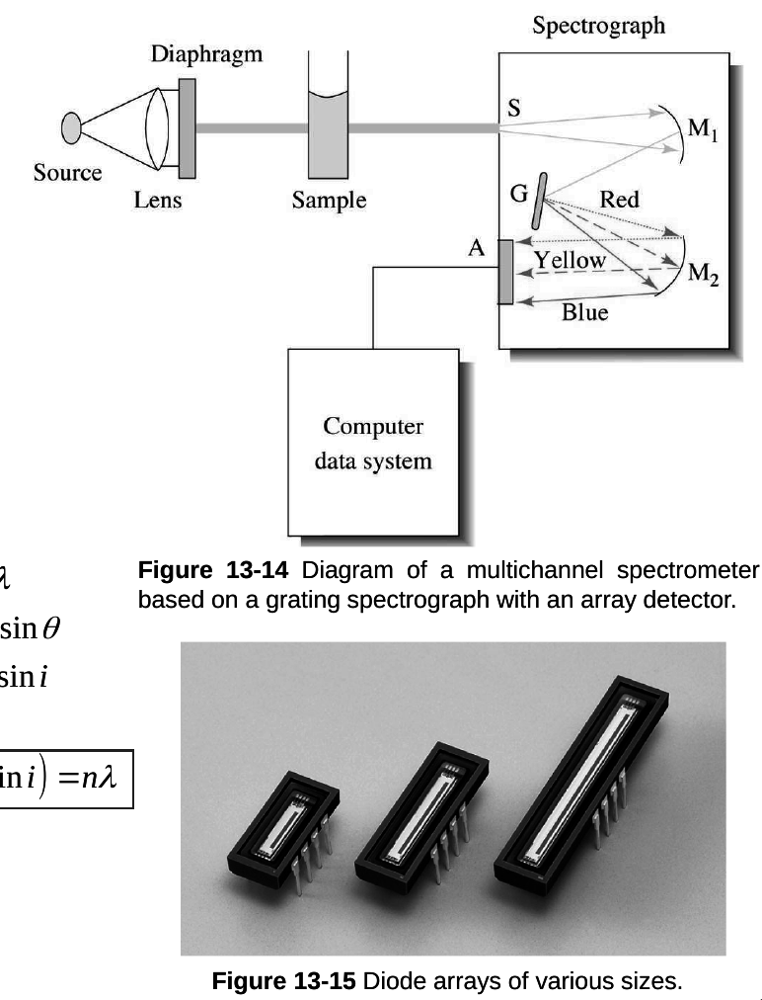
Fig 13-14·13-15 시료를 지난 빛을 회절발(G)이 나누고 배열 검출기(A)가 모든 파장을 동시에 받는다.P 전이 확률(허용 전이 0.1~1), A 단면적(cm²/분자). 전이 확률이 0.01보다 작으면 금지 전이(forbidden)다. 허용 전이의 ε는 10⁴~10⁵이다.
흡수 화학종은 세 종류다. σ, π, n 전자를 가진 유기 화학종, d·f 전자를 가진 무기 화학종, 전하이동 착물이다.
Fig 14-1 테트라진: 기체에서는 진동 미세구조가 보이고, 헥세인 용액에서는 일부만, 물에서는 넓은 띠 하나가 된다. 용매와의 상호작용이 미세구조를 지운다.
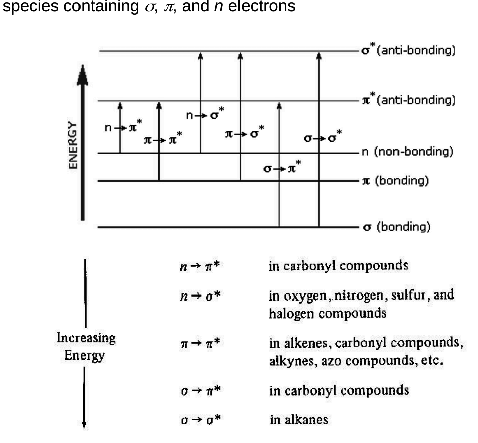
σ, π, n 전자의 전이. 에너지는 σ→σ* > n→σ* > π→π* > n→π* 순이다.| 전이 | 예와 특징 |
|---|---|
| σ→σ* | 알케인. 에너지가 가장 커서 진공 UV(<185 nm)에 있다. |
| n→σ* | O, N, S, 할로젠을 가진 화합물. 150~250 nm, ε 100~3000(Table 14-2). |
| π→π* | 알켄, 카보닐, 알카인, 아조. 200~700 nm, ε 10³~10⁴로 크다. |
| n→π* | 카보닐 등. 가장 낮은 에너지(긴 파장, 예: 아세톤 280 nm), ε 10~100으로 작다. |
[보충] 유기 분석에 실제로 쓰는 것은 π→π*와 n→π*다. 둘 다 200 nm보다 긴 실험하기 쉬운 영역에 흡수가 오기 때문이다.
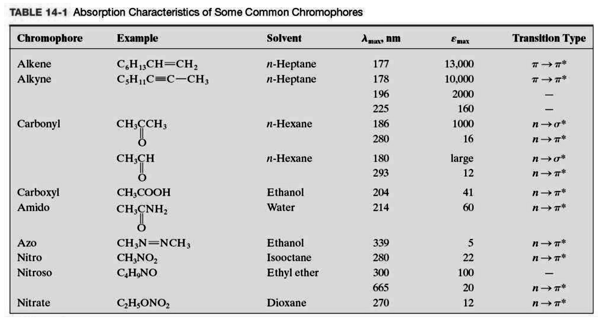
Table 14-1 발색단의 흡수 특성. 알켄 177 nm(13,000), 카보닐 186(1000)과 280 nm(16), 아조 339 nm(5).[보충] 조색단에는 비공유 전자쌍(n 전자)이 있다. 이 전자쌍이 발색단의 π계와 공명(n-π 짝지음)해 π 전자가 더 넓게 퍼지면 HOMO-LUMO 간격이 줄어 더 긴 파장을 더 세게 흡수한다.
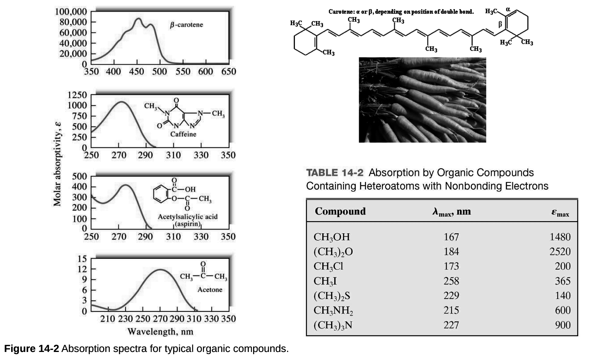
Fig 14-2 β-카로틴(콘쥬게이션 11개, 450 nm 근처, ε 약 10⁵), 카페인, 아스피린, 아세톤의 흡수. 콘쥬게이션이 길수록 λmax와 ε가 커진다.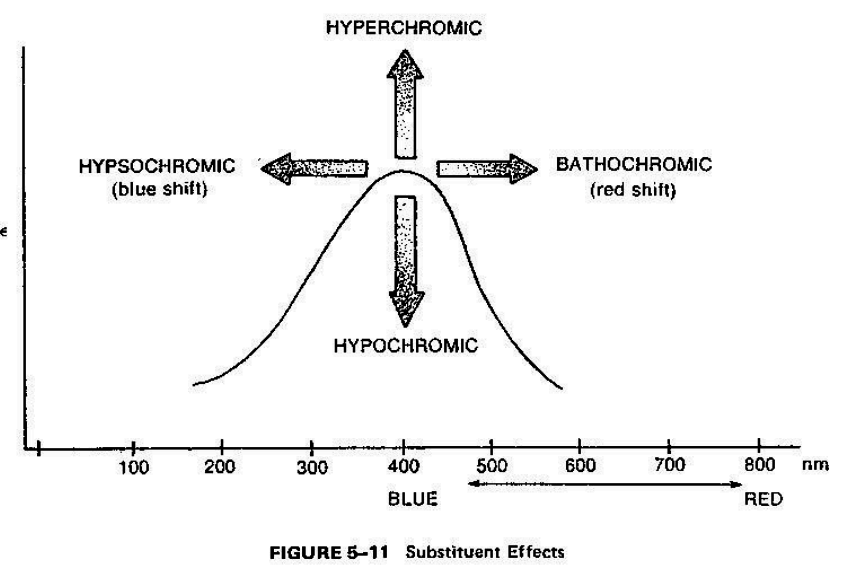
| 이름 | 변화 |
|---|---|
| Bathochromic | 적색 이동. λmax가 긴 파장으로 |
| Hypsochromic | 청색 이동. 짧은 파장으로 |
| Hyperchromic | 농색 효과. ε 증가 |
| Hypochromic | 담색 효과. ε 감소 |
[보충] 적색 이동의 원인: 콘쥬게이션 증가, 조색단 치환, π→π* 전이에서 용매 극성 증가. 청색 이동의 원인: n→π* 전이에서 용매 극성 증가(수소결합이 n 전자를 안정화해 간격이 커짐), 콘쥬게이션이 끊김(예: 아닐린에 산을 넣어 아닐리늄 이온이 됨).
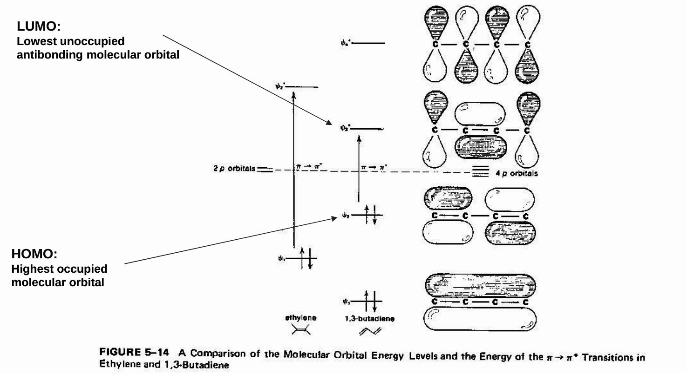
Fig 5-14 에틸렌보다 1,3-뷰타다이엔의 HOMO-LUMO 간격(π→π*)이 작다.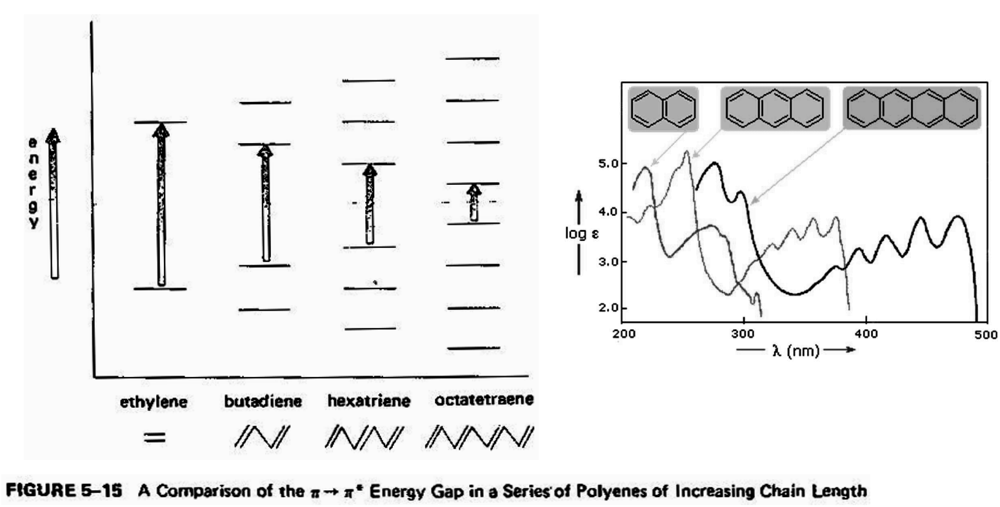
Fig 5-15 사슬이 길수록 간격이 줄고, 오른쪽 그래프처럼 고리가 많을수록 흡수가 긴 파장으로 간다.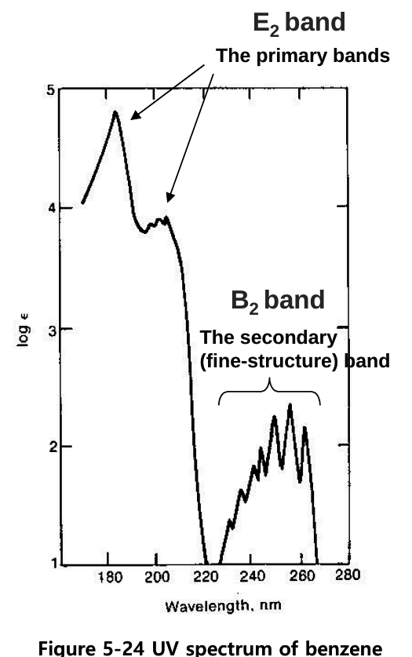
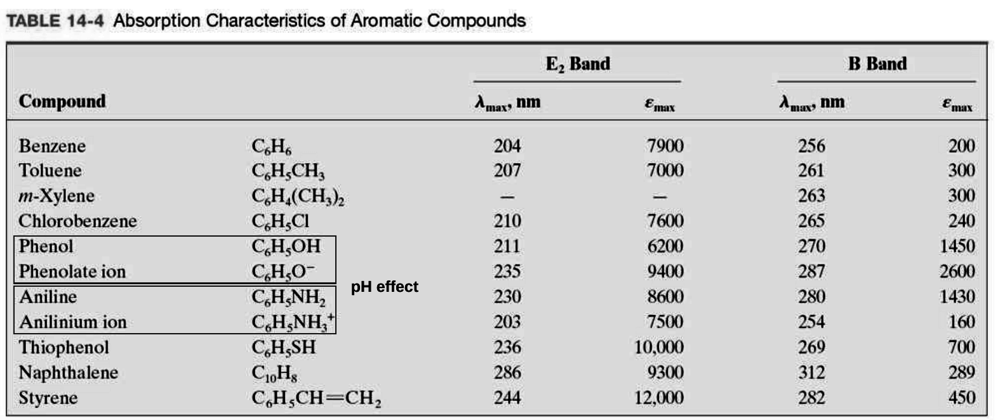
Table 14-4 방향족 화합물. pH 효과: 페놀(211, 270) → 페놀레이트(235, 287) 적색 이동. 아닐린(230, 280) → 아닐리늄(203, 254) 청색 이동.페놀레이트는 음전하의 비공유 전자쌍이 고리와 더 강하게 공명해 적색 이동한다. 아닐리늄은 N의 비공유 전자쌍이 H⁺와 결합해 고리와 공명하지 못하므로 벤젠과 비슷한 흡수로 돌아간다(청색 이동).
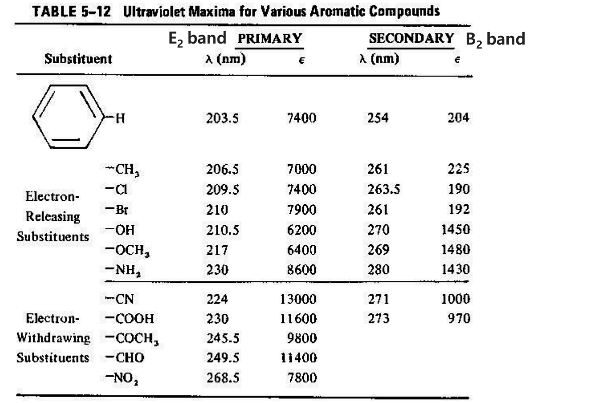
Table 5-12 치환기 효과. 전자 주개(−CH₃, −Cl, −OH, −NH₂)와 전자 끌개(−CN, −COOH, −CHO, −NO₂) 모두 E₂·B₂ 띠를 긴 파장으로 옮긴다. −NO₂가 가장 크게 옮긴다(268.5 nm).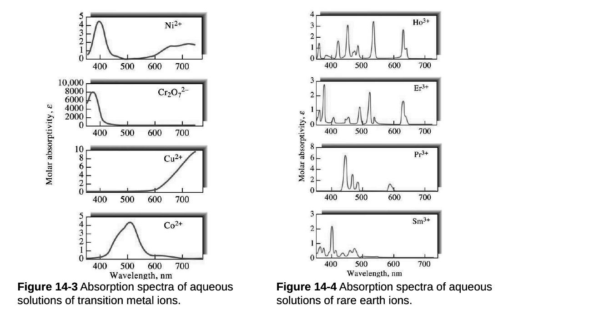
Fig 14-3(전이금속, 넓은 띠)과 Fig 14-4(희토류, 좁은 띠).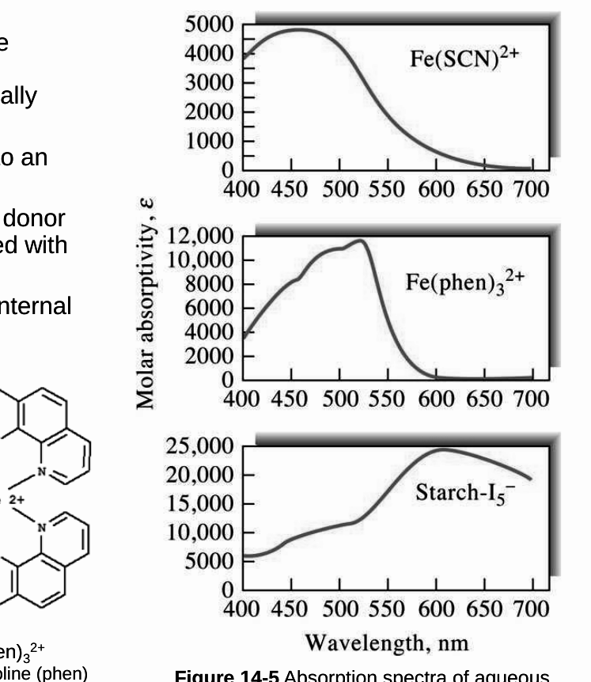
Fig 14-5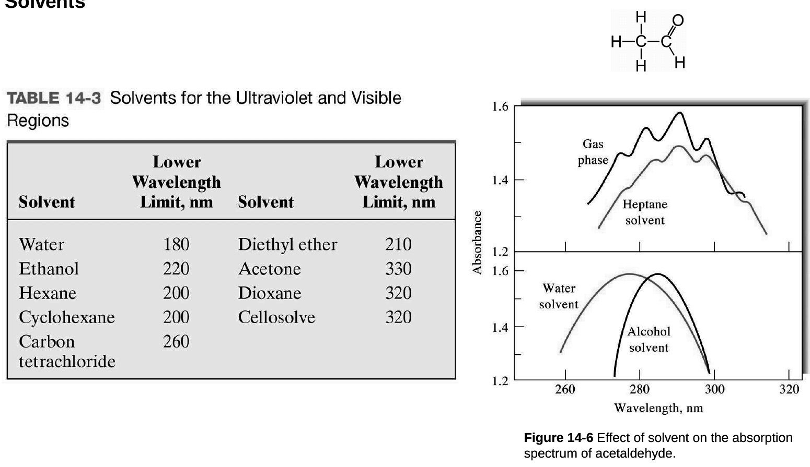
Table 14-3 용매의 사용 하한 파장(물 180, 에탄올 220, 헥세인 200, 아세톤 330 nm). Fig 14-6 아세트알데하이드: 기체·헵테인에서는 미세구조가 보이고, 물·알코올 같은 극성 용매에서는 사라진다.용매는 측정 파장에서 투명해야 하고, 극성 용매는 진동 미세구조를 지운다. 미세구조를 보려면 무극성 용매를 쓴다.
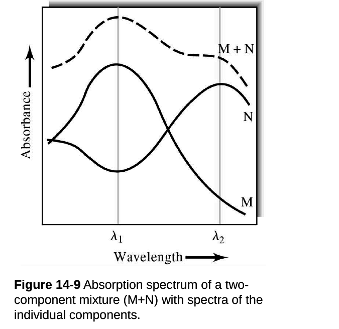
두 파장 λ₁, λ₂에서 흡광도를 재고 네 ε를 표준물로 구하면 연립방정식 두 개로 cM, cN을 푼다. 각 성분의 흡수 차이가 큰 두 파장을 고른다(Fig 14-9).
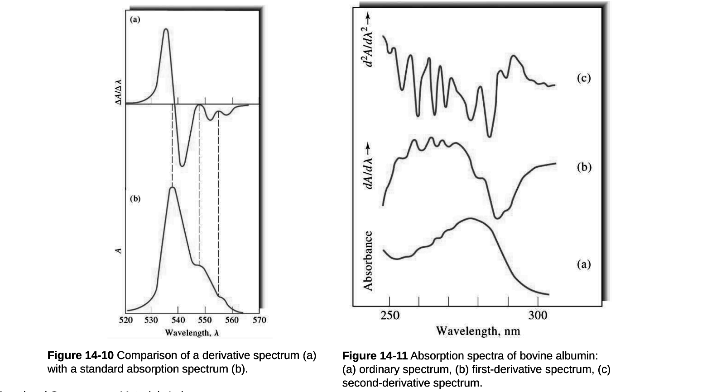
Fig 14-10·14-11 1차(dA/dλ), 2차(d²A/dλ²) 미분 스펙트럼은 겹친 봉우리와 어깨를 뚜렷하게 나누어 준다(소 알부민).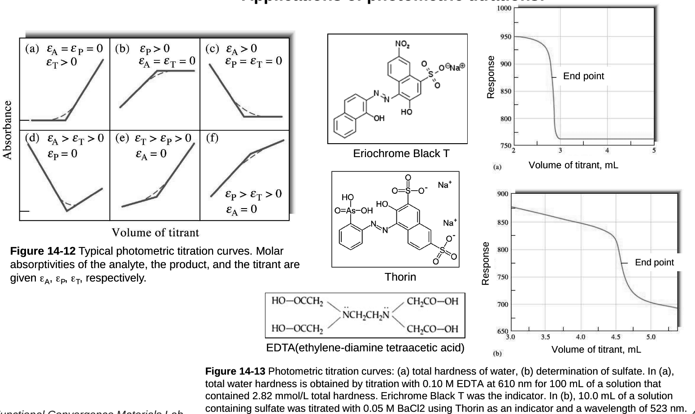
Fig 14-12 적정 곡선 모양은 분석물(εA), 생성물(εP), 적정액(εT) 중 무엇이 흡수하느냐로 정해진다. 두 직선의 교점(외삽)이 종말점이다. Fig 14-13 (a) EBT 지시약으로 EDTA 물 경도 적정(610 nm) (b) Thorin 지시약으로 BaCl₂ 황산 적정(523 nm).종말점 근처가 아니라 그 앞뒤 직선 부분의 데이터로 종말점을 정하므로, 평형이 덜 완결된 반응에도 쓸 수 있다.
[S] ≫ Km: 속도 = k₂[E]₀로 효소 농도에 비례한다(효소 정량). [S] ≪ Km: 속도 = (k₂/Km)[E]₀[S] = k′[S]로 기질 농도에 비례한다(기질 정량).
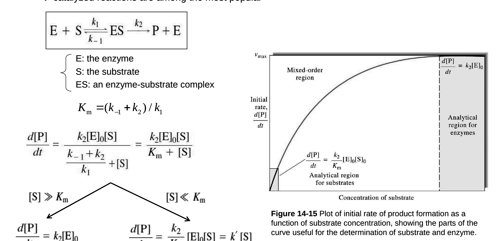
Fig 14-15 기질 농도가 낮은 구간은 기질 정량, 높은 구간(포화)은 효소 정량에 쓴다.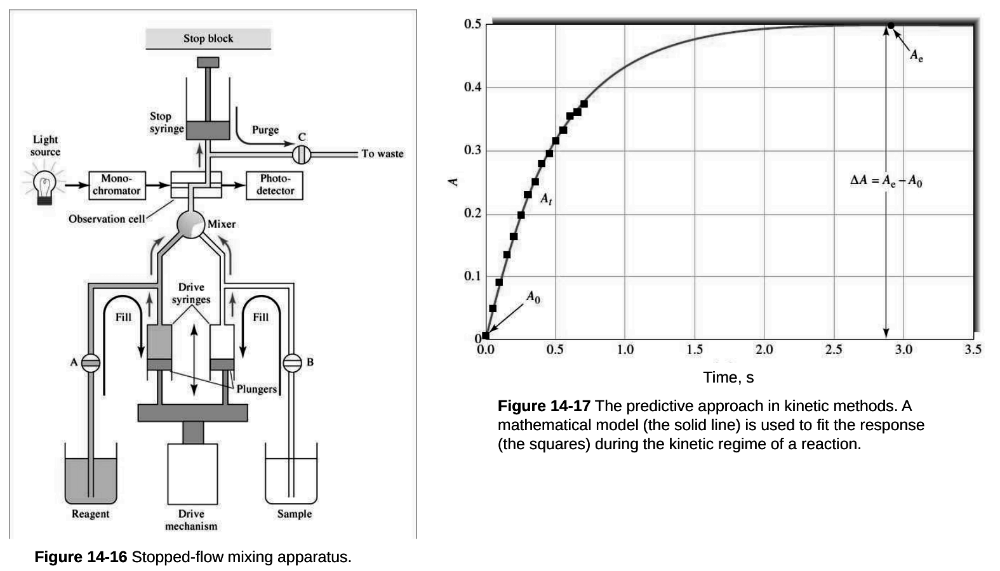
Fig 14-16 정지 흐름(stopped-flow) 혼합 장치는 빠른 반응을 ms 단위로 잰다. Fig 14-17 예측법: 반응 초기 데이터에 수학 모형을 맞춰 평형값 Ae를 예측한다.착물 조성(금속:리간드 비)을 구하는 방법은 연속 변화법, 몰비법, 기울기비법, 컴퓨터 곡선 맞춤법이다.
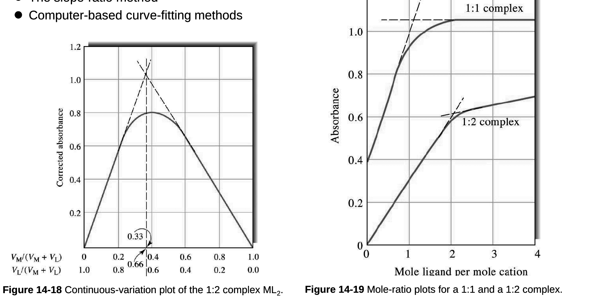
Fig 14-18 연속 변화법: 전체 몰수를 일정하게 두고 몰분율을 바꾼다. 두 직선의 교점이 VL/(VM+VL) = 0.66이면 ML₂다. Fig 14-19 몰비법: 리간드/금속 몰비에 대해 그리면 꺾이는 점이 1이면 1:1, 2면 1:2 착물이다.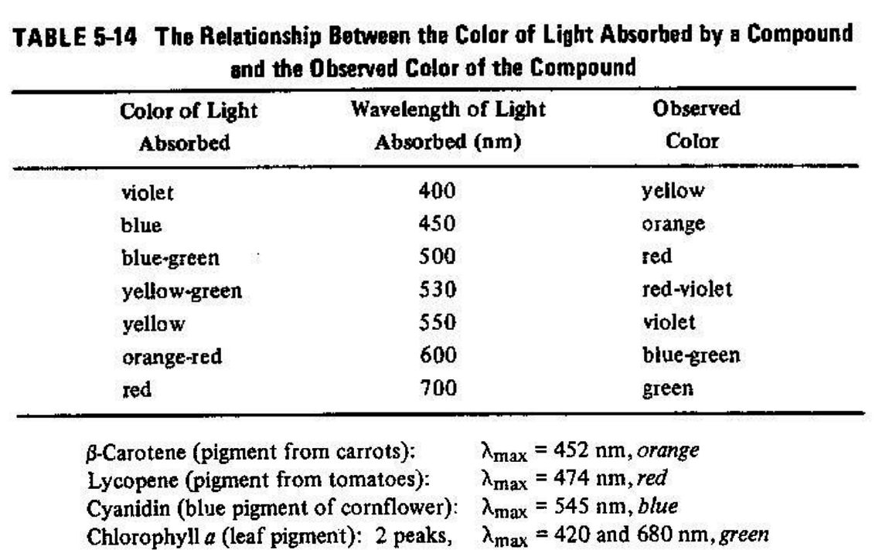
Table 5-14 보이는 색은 흡수한 색의 보색이다. β-카로틴 452 nm 흡수 → 주황, 라이코펜 474 nm → 빨강, 시아니딘 545 nm → 파랑, 엽록소 420·680 nm → 초록.가시광: 보라 400~420, 남색 420~440, 파랑 440~490, 초록 490~570, 노랑 570~585, 주황 585~620, 빨강 620~780 nm.
| 구별 기준 | A | B |
|---|---|---|
| 편차 원인 | 화학적: 평형(해리·회합) | 기기적: 다색광·미광 |
| 휘는 방향 | 다색광: ε′≠ε″일수록 | 미광: Ps/P0 클수록, 고농도 |
| 역할 | 발색단: 흡수하는 원자단 | 조색단: 흡수를 바꾸는 원자단 |
| λ 이동 | Bathochromic: 적색(장파장) | Hypsochromic: 청색(단파장) |
| ε 변화 | Hyperchromic: 증가 | Hypochromic: 감소 |
| ε 크기 | π→π*: 10³~10⁴ | n→π*: 10~100 |
| 띠 모양 | d 전자(전이금속): 넓음 | f 전자(희토류): 좁음 |
| 측정 방식 | Double beam in space: 검출기 2개 | Double beam in time: 초퍼, 검출기 1개 |
| pH 효과 | 페놀→페놀레이트: 적색 | 아닐린→아닐리늄: 청색 |
| 벤젠 띠 | E₂: 204 nm, ε 7900 | B₂: 256 nm, ε 200, 미세구조 |